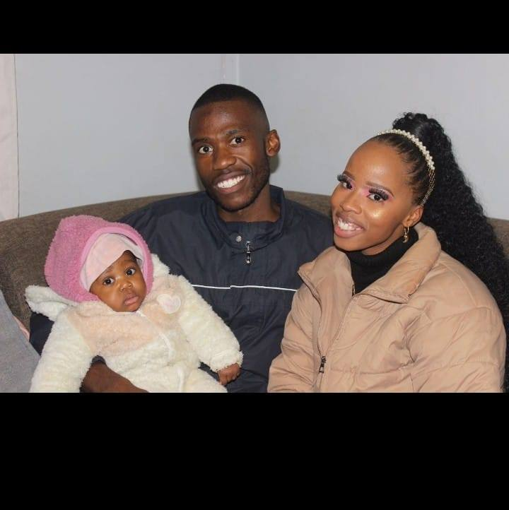

This message was written for February 14th - a day dedicated to love in all its forms.
If you open this again on Valentine's Day, you'll find:
💌 A message from my heart about what you mean to me
🎁 A gift (just because you deserve it,just for you)
🌟 Something special I've been wanting to tell you
For now, just know this: some connections are worth waiting for.
And some people... are worth hoping for.
Come back on Valentine's Day. I promise it will be worth the wait.
Patiently yours, Elias
Either way, thank you for being here. That alone means everything.
💝
To MmaagweLesedi the Woman Who Holds My Heart
You waited. Or maybe you didn't. Either way, you're here on Valentine's Day, and that feels like the universe whispering something beautiful.
✨
First, I need you to know how special you are. Not just as Lesedi's mother (though you're incredible at that). Not just as my past (though those memories are precious). But as you. The woman who carries strength and softness in perfect balance.
💭
I have been doing a lot of thinking about what matters. About second chances. About growth. About how sometimes the right person comes into your life at the wrong time... only to leave at the wrong time again, yet still leave behind a quiet sense of possibility.
👨👩👧
Seeing you with our daughter has shown me what true love really is. It's not about grand gestures. It's in the way you brush her hair. The patience in your voice. The light in your eyes when she accomplishes something new. You are teaching her about love every single day, Thank you for that.
Here's what my heart has been wanting to say:
I'm not the man I was when we were together. I have grown. I have learned. I have become someone who understands that real love isn't what I thought a few years ago, it's about wanting the absolute best for someone, choosing them..
Growth changes people. Sometimes it brings clarity. Sometimes it brings peace. And sometimes, it simply shows us what truly matters.
I have been imagining what it would be like to build something new with you. Not going back to what was, but creating something better. A partnership built on everything we have learned, everything we have become.
For Lesedi's Mother
Every day, I am grateful it was you who gave me the title I am proudest of: RraagweLesedi.
Every day, I watch you love our daughter, and I think: "That's the woman I chose to create life with. That's the woman I want by my side."
Every day, I am reminded that the greatest gift our love ever gave us is sleeping peacefully because of you.
So on this Valentine's Day, I want to say what's been in my heart:
I love our daughter more than life itself.
And I love you, her mother, in ways that surprise even me.
Not as an ex. Not as just a co-parent. But as the woman I would choose by my side.
I don't know what the future holds. But I know what I hope for:
More moments watching you be an amazing mother
More conversations that start with "Remember when..." and end with laughter
More chances to show you the man I have become
More opportunities to build something beautiful together
🎁 Your Valentine's Gift
This isn't a physical gift. It's a promise:
I promise to always respect you as Lesedi's mother.
I promise to never stop growing into someone worthy of your trust.
I promise to keep this door open... in case you ever want to walk through it again.
My gift to you is a promise to always be there, for both of you guys.
Thank you for being the woman you are. Thank you for our daughter. Thank you for this chance to speak my heart.
With all the love I have to give, Elias
💖 💖 💖
This message was written by a heart that believes in growth and possibility.
Too easy!!! should have asked you what's my third name...
Song 0/9
I made this for you, quietly and intentionally.
When we were together, our ambitions were not aligned and at the time,
that mattered more than we understood. We were at seeing life
from different angles I a bit immature to some degree, and that created distance.
As I have grown, I have also learned where I stayed comfortable for too long holding on to
familiar routines and people even when it was time to move forward, and focus on a much bigger picture.
The direction I am going, where and what I am building toward now reflects a clearer version of myself
and it looks a lot like the future I once imagined for us. This comes from growth
not pressure and not regret.
These songs are here to speak where words sometimes fall short.
Take your time with them. There is no expectation attached, only honesty.
• • •
Mariah Carey — I Still Believe
This song reminds me that belief doesn't disappear just because timing was wrong.
Starting your journey...
Monica — For You I Will
Faith Evans — Soon As I Get Home

Some feelings do not fade they just wait for maturity to catch up.
Brandy — Have You Ever
Boyz II Men — Water Runs Dry
Alicia Keys — If I Ain't Got You
Mariah Carey — Through the Rain
John Legend — Ordinary People
India.Arie — Strength, Courage & Wisdom
💖
Every song here was chosen with intention. Every lyric speaks to something I couldn't always find words for.
This isn't about the past. It's about possibility. About growth. About what could be when two people have both grown into better versions of themselves.
No pressure, no expectations. Just honesty, respect, and the quiet hope that sometimes love deserves a second look.
💌
If you feel like saying something...
No pressure, no expectations. Just if something in your heart wants to speak back.
💝 This message will open in WhatsApp with me. Our connection matters, whatever you want to say.
✅
Ready to Send!
WhatsApp should open with your message. If not:
Open WhatsApp on your phone
Look for Elias in your contacts
Your heartfelt message will be ready to send
Thank you for sharing your heart. No matter what you wrote, I appreciate you.